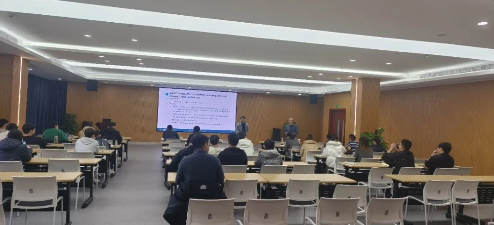
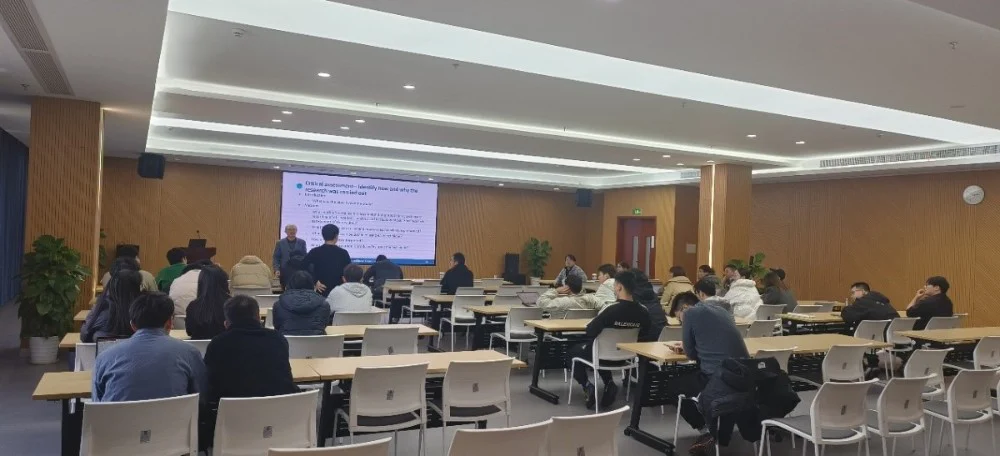
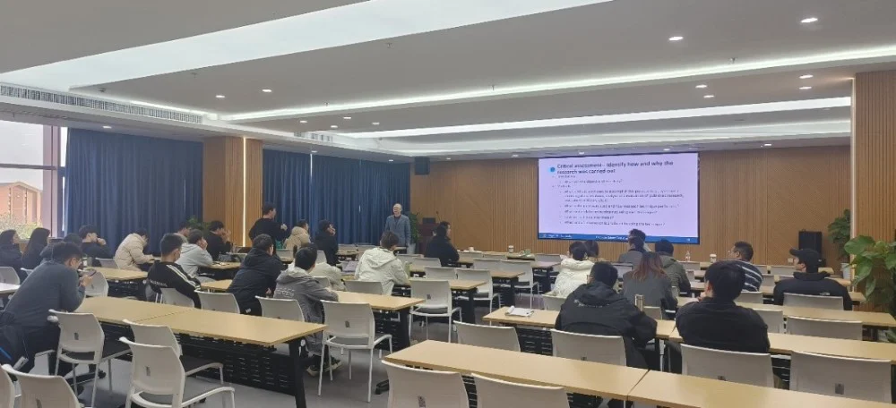
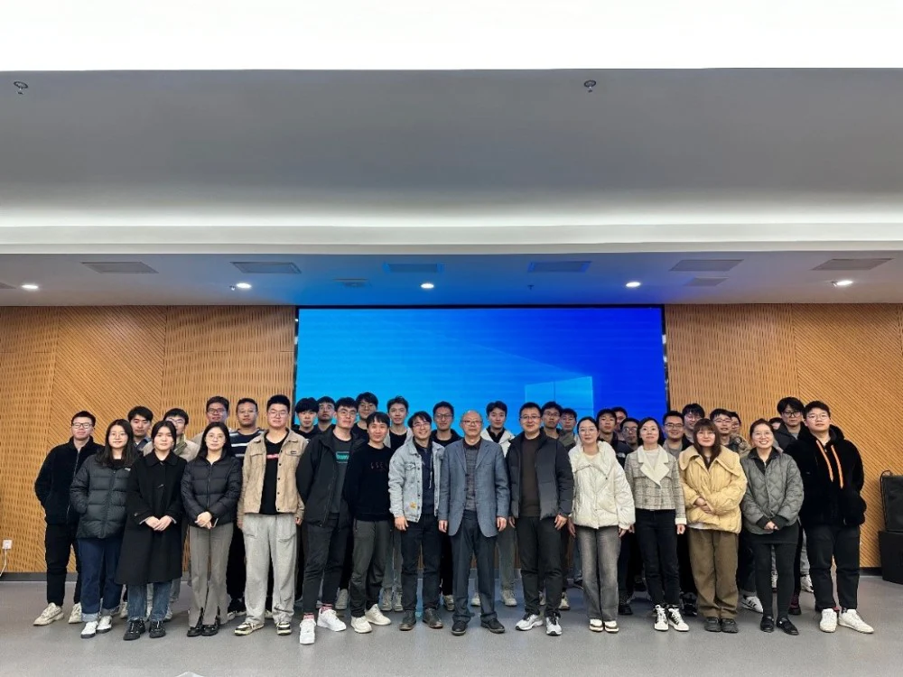

医学图像/眼科影像专题学术分享会----iMED六十四讲
2023年12月6日，刘永怀博士是英国边山大学视觉计算实验室教授兼主任。他目前是许多国际期刊和会议论文集的区域/副编辑或编辑委员会成员，也是许多国际期刊的客座编辑，包括《国际计算机视觉杂志》等。他曾担任90多个国际会议和期刊的项目委员会委员和裁判，获得了许多国际奖项，如最佳编辑，以及该领域顶级国际会议的最佳审稿人。

论文写作是研究的关键部分。一篇写得好的论文对于其可读性、在顶级国际期刊和会议论文集上的选择和发表尤为重要。在本次演讲中，我将首先概述研究课题的选择和实施，然后重点详细讨论其关键组成部分和内容，并重点介绍其校对，改进和审查的几个方面，最后总结一些提交时应注意的事项。

报告以研究的定义展开，围绕为什么要写文章，文章受众群体，读者在寻找什么，精度与略读，写作顺序、文章的组织架构以及文章每部分写作注意事项等几个方面详细展开。具体来说，摘要撰写应当简洁有力，逻辑清晰，一个好的摘要应当有效回答五个问题，帮助他人研究给人以启发；引言部分应当包含研究动机、研究目标、方法与结果、伦理分析、文章组织架构五个方面；相关文献引用应该重点突出自己研究内容与参考文献的差异，且参考文献之间应当有一定依赖关系，同时要有效指出自己对参考文献的认识与理解。除此之外，每一个结论所在均应当有数据支撑，如果没有则删除该结论，图表标题应当明确且逻辑一致，尽量让读者通过摘要图表等可以大概了解文章基本内容；最后我们应当适当指出研究不足并作出讨论分析，在更深刻的重新审视下写出结论；同时在最终检查过程中应当不断注意用词，尽最大可能方便读者阅读。

会议最后，郝晋奎博士提问：关于简单的研究内容，摘要部分是否应当简单明确表达含义？刘老师循循善诱，指出虽然研究内容简单，但是综合考虑全文以及文章的价值，仍建议是简单清楚的表达出自己研究，而非故意包装的晦涩难懂。最后刘老师与大家合影留念。
